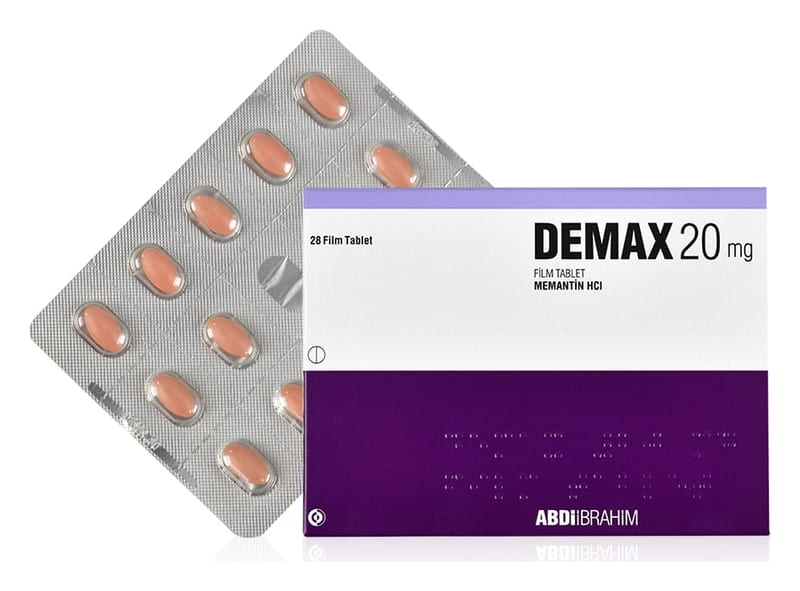

Demax 20 mg Film Kaplı Tablet, 84 Adet

Ne için kullanılır
KT · Bölüm 1DEMAX film tabletler, pembe renkte, oval bikonveks şekillidir. 28 ve 84 film tabletlik blister ambalajlarda piyasaya sunulmaktadır.
DEMAX, demansa karşı kullanılan ilaçlar grubundadır. Alzheimer hastalığında görülen hafıza kaybı, beyindeki mesaj sinyallerinin bozulması nedeniyle ortaya çıkar. Beyinde, NMDA-reseptörü denilen oluşumlar bulunur. Bu oluşumlar, öğrenme ve hatırlama için önem taşıyan sinir uyarısında rol oynarlar. DEMAX, NMDA reseptör antagonistleri denilen bir ilaç grubuna dahildir ve NMDA reseptörleri üzerinde etki göstererek sinir uyarısını ve hafızayı iyileştirir. DEMAX, bu etkisi nedeniyle, orta ve şiddetli evre Alzheimer hastalığının tedavisinde kullanılır.